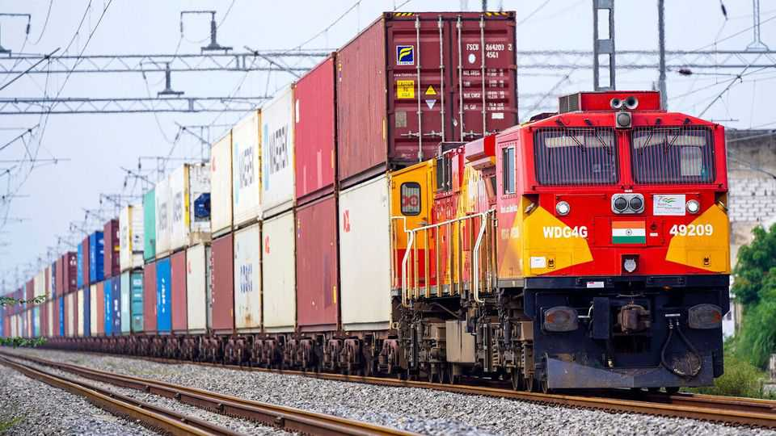
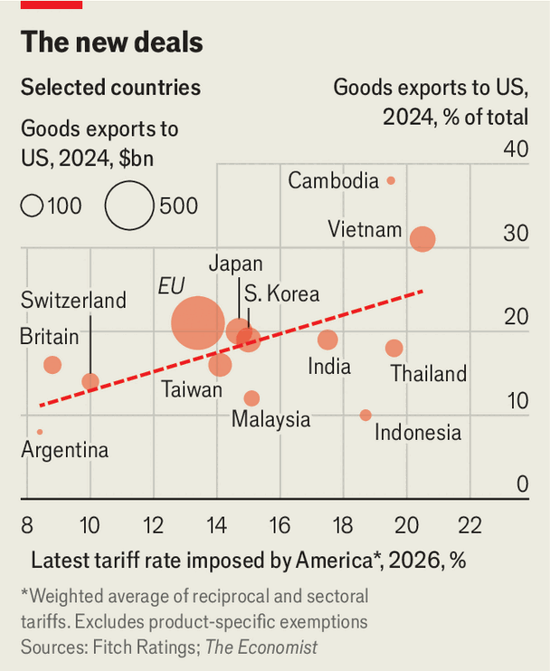

Finance & economics | Comparative advantage

In recent weeks President Donald Trump has struck trade deals with Argentina and India. Both countries have obtained partial relief from tariffs by making it easier for American firms to sell goods to their citizens in return. The backlash was swift. Indian farmers’ unions branded the deal a “total surrender”; an opposition politician warned that India risked becoming “a dumping ground”. Such charges have become familiar. France’s former prime minister described the EU’s deal with America as an act of “submission”.
Though Mr Trump has fallen far short of the “90 deals in 90 days” his administration promised last April, he has signed a flurry of them. America has concluded five final reciprocal trade deals—including with Argentina, Cambodia and Malaysia—plus around a dozen looser “frameworks” with partners such as the EU and India. These are deliberately thin: fewer than eight pages long and heavy on vague commitments. None has congressional approval, binding enforcement or a clear dispute-settlement mechanism. Even so, they have set new terms of access to America’s market. Who came out ahead?

Cambodia and Malaysia paid the highest price. Lacking size and leverage, both rushed agreements through. In return for new reciprocal tariff rates of 19% and exemptions for many exports, both countries offered sweeping concessions. Some were conventional, such as scrapping some tariffs and easing sanitary rules. Others went much further. Malaysia agreed to mirror American export controls against “non-market” third countries (meaning China) and consult Mr Trump before signing digital-trade deals. Moreover, America can terminate the pact if Malaysia strikes another deal it dislikes. One former Malaysian politician called it “the worst agreement” Malaysia has entered since independence in 1957. Even Malaysia’s current trade minister has spoken of “unfair” clauses.
Those with more leverage over America—including the EU, Japan, South Korea and Taiwan—conceded less. This group controls everything from industrial supply chains to advanced semiconductor chips. Each faces reciprocal tariffs of 15% and secured relief from levies on goods including cars, drugs and semiconductors. In exchange, they will eliminate many industrial and agricultural tariffs and lower non-tariff barriers on American vehicles. They also made eye-catching pledges—like the EU’s to buy $750bn-worth of American energy, or Taiwan’s to invest $250bn there—which are unlikely to be fulfilled.
India, too, negotiated a middling deal from a position of limited dependence, offering targeted liberalisation rather than sweeping concessions. It secured a reciprocal tariff rate of 18%, plus conditional exemptions for generic drugs, and aircraft and car parts. In return it will ease market access for American industrial goods and some politically sensitive exports, such as genetically modified corn products.
The countries to obtain the greatest access to America’s market at the lowest cost were Argentina and Britain. Both received capped tariff rates at 10% with big carve-outs, such as being able to sell large quantities of untariffed beef to Americans. British firms can sell 100,000 cars a year at the 10% rate, and secured cuts to levies on car parts and steel. In return, both countries widened access to their markets, yet avoided many obligations imposed elsewhere.
For those who think trade deficits signify failure and surpluses success, Mr Trump is the clear winner. America has obtained greater market access for its exporters, promises to dismantle non-tariff barriers and vast investment pledges. Nearly every agreement also prescribes co-operation on export controls and unfair practices by third countries, meaning China. Many also restrict digital-services taxes and extend the reach of American regulation overseas.
Yet that mercantilist thinking—exports good, imports bad—is a poor way to keep score. America’s tariffs squeeze consumers and reduce competition. Its trading partners, by contrast, are being forced to open up. These changes will outlast the deals themselves. In the end, the countries that made the largest concessions may be the ones which gain the most. ■
For more expert analysis of the biggest stories in economics, finance and markets, sign up to Money Talks, our weekly subscriber-only newsletter.